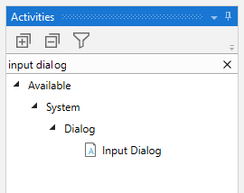
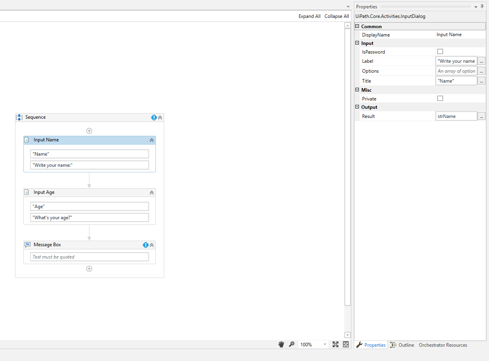
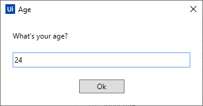

Lesson 2 - First Robot
The Studio Interface
Creating the First Project
Let's create our first robot! It will be a simple robot but you can learn some basic concepts.
This is the first screen that you see when you run Studio. We have 3 options:
Open: As the title says you can open projects and below a list with recent opened projects will appear.
New Project: There are some options with specific functions, you can read the well explained descriptions on the interface.
To create a blank process the option is "Process".
New From Template:
Automation Purpose
We will create a bot that reads input from the user and display a message box contaning the typed information.
To create a process click on Process.
Give a name and description.
Tip: I personally use the Pascal Case name convention e.g. "MyProject."

Quick view of Studio development interface.
Activities
What are activities? To understand more and have quick reference check Activities and Packages Cheatsheet
In the Activities Panel search for Sequence activity and add it. To do just drag and drop to the canvas.
Add Input Dialog and a Message Box.
Your Workflow should look like this:
Let's add 2 variables clicking on Create Variablies in variables Panel. Add one String and one Integer (name it as you want).
Remember! String are for text values: "I'm string value"
Integers for Integer values: 1997
Now let's add information to our activities. Add a title and a description like this:
On the right side in the Properties Panel you can define specific settings for each activity. In Output add the String variable created on the previous step.
Do the same in the next Input Dialog activity, but this time add the Integer variable.
8 Add the following values to Message Box: "Hello! my name is "+strName+" and I'm "+intAge.ToString
You can click on the three dots in the Properties Panel> Input> Text to expand and write your expression.
Let's run the Workflow!

If you click on the arrow it's possible to see that we have 3 options to choose on Debug: Run File, Debug, Run.
Debug methods will be explained along the course. If you are interested in learning more right now access: Debug Methods in UiPath
To run the project click on Debug.
Type a name:
Type age:
The result should be displayed like this:
That's it!
We finished our first robot! It was very simple but you've learned some useful conceps like:
A little bit of the interface, activities, variables and how to run a project.
Activities used
Have you liked the content? Send me a message if you have critics or suggetions.
Follow my page on Instagram to stay updated about new upcoming lessons. Thank you!
Prev Next